図解：ビザンティンの美術
ビザンティン美術の展開
- 527年〜
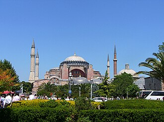
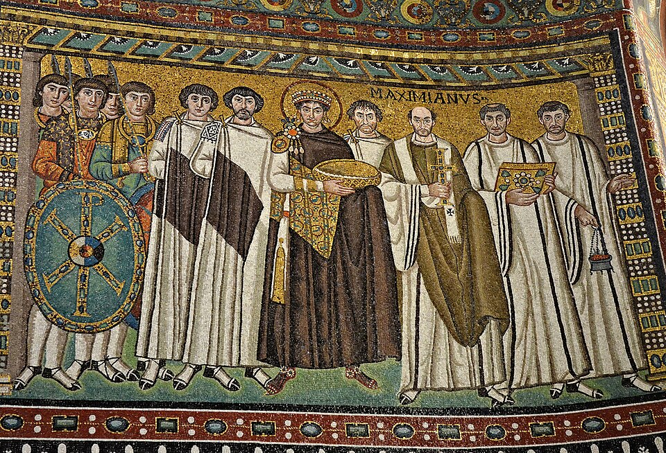
第一次黄金期ユスティニアヌス帝
アヤ・ソフィア再建 - 843年
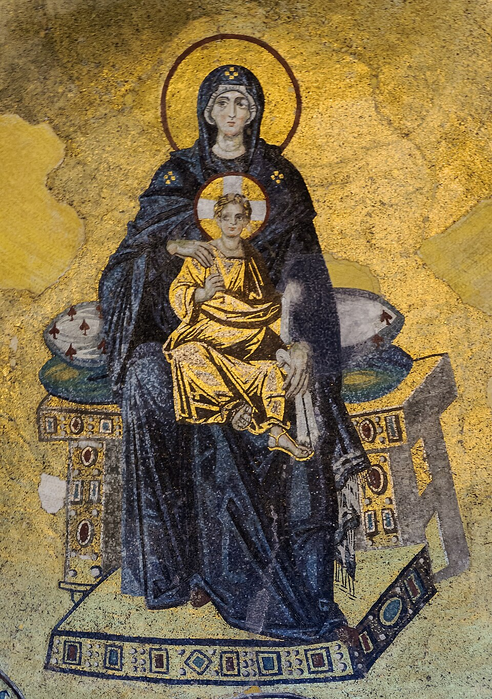
聖像破壊の終結約100年の破壊運動
アプスに《聖母子》 - 867年〜
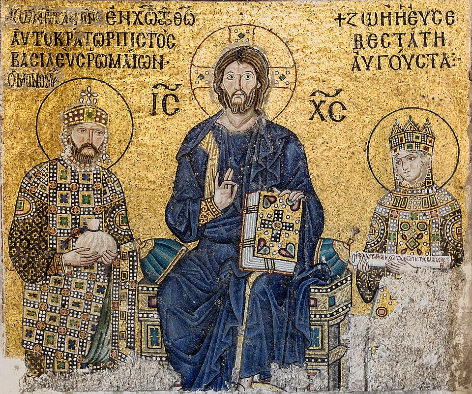
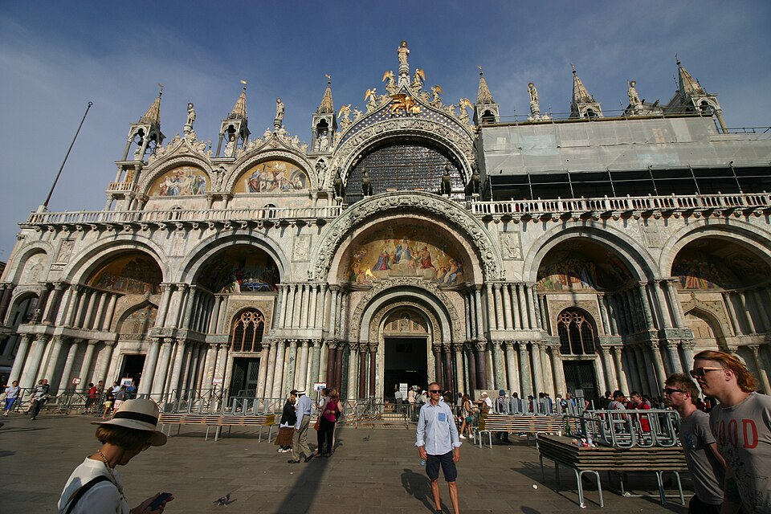
第二次黄金期マケドニア朝
ビザンツ様式 - 1261年〜
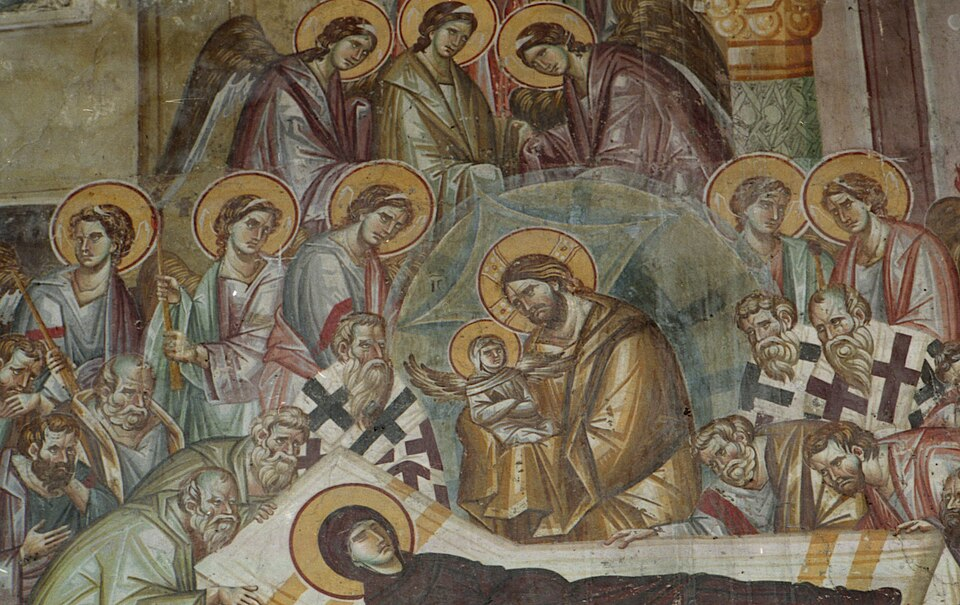
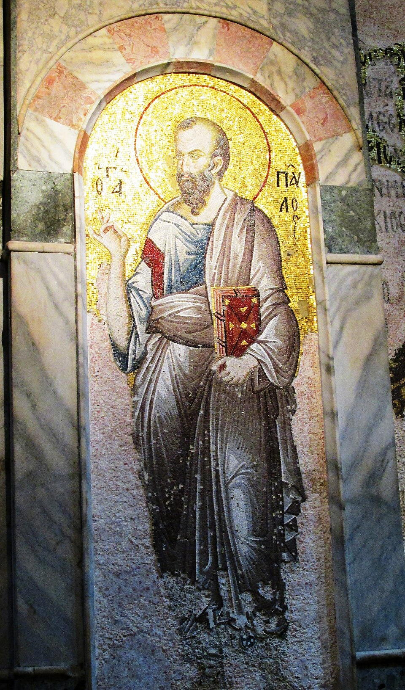
第三次黄金期パレオロゴス朝
フレスコ画へ移行 - 1453年以後
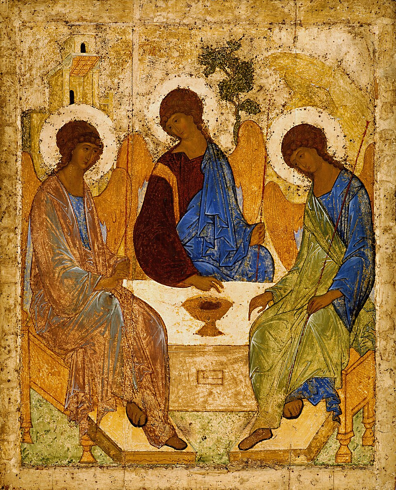
 ロシア・クレタへイコンはロシア正教へ
ロシア・クレタへイコンはロシア正教へ
エル・グレコの根に
西ヨーロッパとの違い
図版の出典
- 《アヤ・ソフィア》トラレスのアンテミオス、ミレトスのイシドロス：出典（Public domain（Missme 999による権利放棄））
- 《ユスティニアヌス帝と従者たち》作者不詳：出典（CC BY-SA 2.0）
- 《アヤ・ソフィアのアプスの聖母子モザイク》作者不詳：出典（CC0 1.0（Myrabella撮影））
- 《キリストと皇帝コンスタンティノス9世モノマコス、皇妃ゾエのモザイク》作者不詳：出典（CC0 1.0（Myrabella撮影））
- 《サン・マルコ寺院》建築家不詳：出典（CC BY-SA 4.0（© José Luiz Bernardes Ribeiro））
- 《聖母の眠り（オフリド、聖母ペリブレプトス聖堂）》ミハイル・アストラパス、エウティキオス：出典（Public domain（PD-Art））
- 《聖パウロ（コーラ修道院のモザイク）》作者不詳：出典（CC BY-SA 2.0）
- 《聖三位一体》アンドレイ・ルブリョフ：出典（Public domain（PD-Art／PD-old-100-expired））
- 《無原罪の御宿り（オバーリェ礼拝堂祭壇画）》エル・グレコ：出典（Public domain（PD-Art／PD-old-100-expired））
重要人物
皇帝
- テオドシウス1世ローマ皇帝395年に死去し、帝国は二人の息子へ
- ユスティニアヌス帝皇帝527年即位。アヤ・ソフィア大聖堂を再建させる
- レオン3世皇帝726年に聖像破壊運動を始める
- バシレイオス1世皇帝マケドニア朝を開く。第二次黄金期の始まり
- コンスタンティノス・モノマコス皇帝キリストとともに描かれたモザイクに銘文が残る
ビザンティンを受け継いだ画家
東ローマ帝国と第一次黄金期
東ローマ帝国とビザンティンの名
動画 0:35～395年、ローマ帝国の皇帝テオドシウス1世が亡くなり、帝国は二人の息子に受け継がれました。広大な領土を支配する力がすでになかったため、二人は帝国を東西に分けて統治することになりました。当初の分割は行政上のものにすぎませんでしたが、後に東ローマ帝国と西ローマ帝国は別の国になりました。
西ローマ帝国はゲルマン人の影響によって476年に滅亡し、東西分割から100年も続きませんでした。一方、東ローマ帝国は強力な権力体制を築くことに成功し、1000年近く命脈を保ちました。ビザンティン美術とは、この東ローマ帝国で展開された美術です。
東ローマ帝国の首都コンスタンティノープルの旧称は、ビザンティウムでした。ここからビザンティン帝国、あるいはビザンツ帝国という呼び名が生まれ、美術にもビザンティンという名が使われています。
第一次黄金期とアヤ・ソフィア
動画 1:37～ビザンティン美術の特色が現れ始めたのは、527年に即位したユスティニアヌス帝の頃です。帝国は彼のもとで最盛期を迎え、その版図はイタリアから北アフリカにまで及びました。この時代を「第一次黄金期」と呼ぶことがあります。
ユスティニアヌス帝は宗教政策にも力を入れ、反乱で破壊されていた大聖堂を再建させました。それがアヤ・ソフィア大聖堂です。それまでに前例のなかった、直径33メートルにも及ぶ巨大なドームを特徴としています。西で好まれたバシリカ式と、東で好まれた集中式を融合し、円蓋式バシリカという新たな建築形式を生み出しました。

《アヤ・ソフィア》
- 作者
- トラレスのアンテミオス、ミレトスのイシドロス
- 制作時期
- 532～537年（現存外観には後代増築を含む）
- 所在地・所蔵
- イスタンブール、トルコ
- 素材・形式
- 建築
出典・画像について
現存外観には後代の改修とミナレットを含みます。
画像出典：Missme 999
Public domain（Missme 999による権利放棄）
作品情報：作品・画像・利用条件
制作メモ
低解像度の配信画像です。

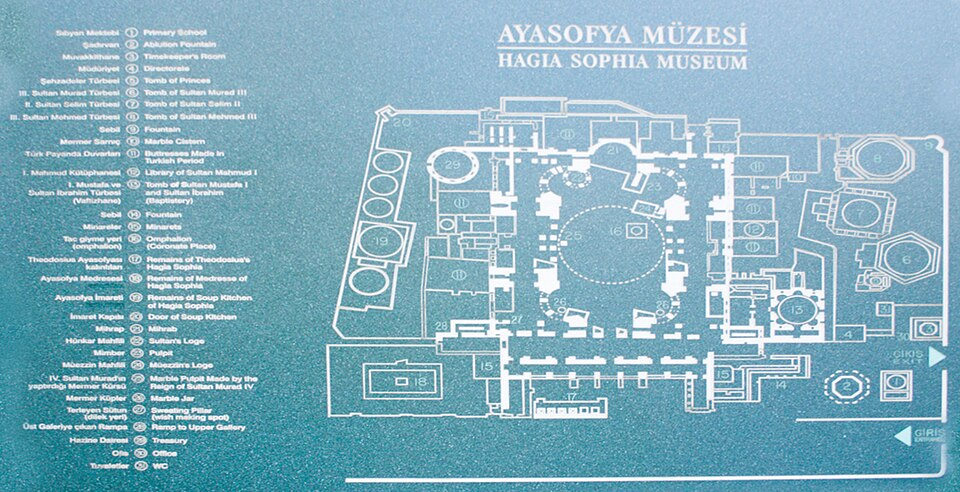
画像を拡大 ＋《アヤ・ソフィア平面図（現代の案内模式図）》
- 作者
- David Bjorgen（Cybjorg）、画像調整Gothika
- 制作時期
- 2005年公開、2008年調整（建築532～537年）
- 所在地・所蔵
- 対象建築：イスタンブール、トルコ
- 素材・形式
- 建築平面図
出典・画像について
色ガラスと金のモザイク
動画 2:25～教会を彩るのはモザイク壁画です。モザイク画は、細かな破片を敷き詰めて作る絵を指します。古代ローマでは細かな大理石が用いられましたが、ビザンツ帝国のモザイク画のほとんどは、色ガラスや金を敷き詰めて作られています。材料は高価でも、色彩の美しさと耐久性の高さから好まれ、帝国の繁栄を表すものでもありました。
色ガラスのモザイクは、大理石のものとは違い、光が当たるときらきらと輝きます。画像やパソコンの画面で見る場合と、実物を見る場合とで、評価が大きく変わる作品といえます。
皇帝を神の代理人として描く
動画 3:09～ビザンティン美術で押さえておきたい作品に、《ユスティニアヌス帝と従者たち》があります。イタリアのサン・ヴィターレ聖堂内に、今も残されています。

《ユスティニアヌス帝と従者たち》
- 作者
- 作者不詳
- 制作時期
- 6世紀、547年頃
- 所在地・所蔵
- ラヴェンナ、サン・ヴィターレ聖堂
- 素材・形式
- モザイク
出典・画像について
画像出典：Carole Raddato
CC BY-SA 2.0
作品情報：作品・画像・利用条件
注目すべきなのは、皇帝とその従者を描くというテーマです。それまで教会にあった絵は、文字が読めない人にも聖書の内容が分かるよう、聖書の出来事を体系的に示すものでした。しかし、この作品は聖書の出来事ではなく、実在する皇帝と従者を描いています。皇帝には、イエス・キリストや聖人に描かれるはずの光輪まであり、まるで神のような存在として表現されています。古代ローマの皇帝崇拝を引き継ぐ形といえるでしょう。
一神教であるキリスト教は、皇帝を神として崇拝することを認めません。そこでビザンツ帝国の皇帝たちは、神そのものではなく「神の代理人」という立場を取りました。キリスト教を重視しながら、自らの地位も高めようとしたのです。ユスティニアヌス帝の時代に、中央集権的な権力構造が築かれていたことが分かります。
イコン、テンペラ、写本
動画 4:24～モザイク画とともに特徴的なのが、イコン崇拝です。イコンは、パソコンなどで用いる「アイコン」と同じ語源を持つ言葉です。聖人や天使を小さな木の板や象牙の板に描き、持ち運べるようにしたもので、家にあれば教会へ行かずに祈ることもできました。身近な感覚では、好きなアイドルのグッズを家に飾ることにもたとえられます。
同じ作品・図版と利用可能な画像を確定できず掲載を保留しています。
《天使ガブリエルのイコン（個体未確定）》
- 作者
- 未確定
- 制作時期
- 動画表記14世紀頃、候補Commons13世紀
- 所在地・所蔵
- 未確定
- 素材・形式
- 板絵・イコン
出典・画像について
同じ作品・図版と利用可能な画像を確定できず掲載を保留しています。
イコン制作には、テンペラという技法が用いられました。「混ぜ合わせる」を意味するイタリア語テンペラーレに由来し、顔料と卵などを混ぜ合わせた絵の具で描く絵を指します。卵が接着剤の役割を果たし、顔料を板に留めます。15世紀に油絵が主流になるまで、絵画によく用いられた技法で、イコン画はその先駆けでした。
ほかには、古代ローマにもあった浮き彫り彫刻の再興や、羊の皮で作った紙を用いた写本などがあります。6世紀の段階で、ビザンティン美術の基礎はすでに出来上がっていたといえるかもしれません。それまでの美術とキリスト教を融合させたものと捉えられます。

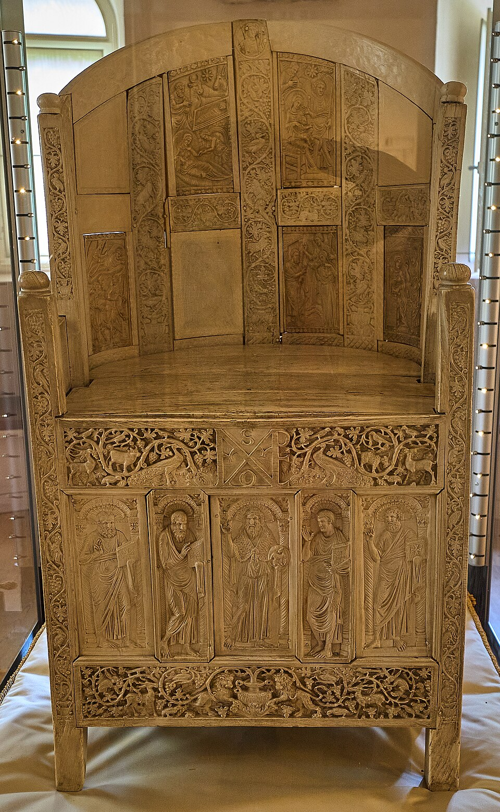
画像を拡大 ＋《マクシミアヌス司教座》
- 作者
- 作者不詳
- 制作時期
- 6世紀
- 所在地・所蔵
- ラヴェンナ、大司教博物館
- 素材・形式
- 象牙浮彫
出典・画像について
Commons上でトリミングされた原品写真です。
画像出典：Graeme Churchard from Bristol (51.473110 -2.625987), UK
CC BY 2.0
作品情報：作品・画像・利用条件

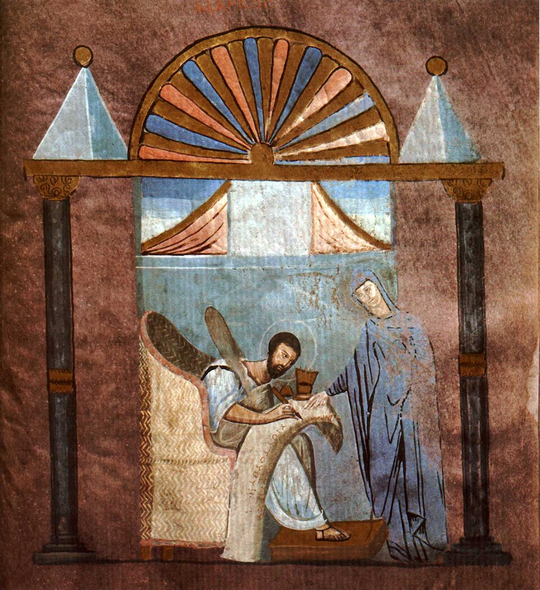
画像を拡大 ＋《ロッサーノ福音書、fol.121r《福音書記者マルコ》》
- 作者
- 作者不詳
- 制作時期
- 6世紀（動画表記580年）
- 所在地・所蔵
- Museo Diocesano e del Codex、ロッサーノ、イタリア
- 素材・形式
- 写本挿絵
出典・画像について
社会の混乱と聖像論争
イスラム勢力と北方の脅威
動画 5:31～7世紀になると、ムハンマドが創始したイスラム教という強大なライバルが現れました。アラビア半島をルーツとするイスラム教の勢力は、急速にシリアやエジプトを支配下に置き、メソポタミア地方を支配していたササン朝ペルシャも滅ぼしました。帝国に隣接する厄介な相手が、敵対する宗教という背景も持つようになったのです。ムスリムはビザンツ帝国への侵入も試み、たびたび戦争を繰り広げました。
さらに、北方周辺から侵入してきたスラブ人も、7世紀頃の帝国にとって脅威でした。この民族と、もともとその地にいたブルガール人が建国したのが、現在のブルガリアにつながるブルガリア帝国です。帝国は、イスラム勢力とともに、こちらにも対応する必要がありました。
公用語の変化と東西の違い
動画 6:39～社会が混乱するなか、美術や文化にも変化が起こります。7世紀、ビザンツ帝国は公用語をラテン語からギリシャ語へ変えました。東ローマという名はあっても、この地域は地理的にはギリシャ人の地域でした。ローマ帝国の名残でラテン語を公用語としていましたが、ギリシャ語を話す人の方が多く、その方が都合がよかったのです。この変化によって、ラテン語圏である西ヨーロッパ諸国との文化的な違いは大きくなりました。
偶像と聖像をめぐる論争
動画 7:08～東西の違いを明確にしたのが、726年に発令された聖像禁止令です。前提として、キリスト教には偶像崇拝を禁じる掟があります。偶像とは、神仏を目に見える形で表したものです。神のような超越した存在は人の目に見えるものではなく、表現できるものでもない、という考え方です。母体となったユダヤ教も、偶像を作って祈りの対象にすることを禁じていました。
キリスト教もユダヤ教に倣い、神の彫像などは作っていませんでした。一方、イエス・キリスト、聖母マリア、その他の聖人は、目に見える形で表現されています。これらを聖像と呼びますが、扱いは微妙な領域でした。勢力を伸ばしていた隣のイスラム教では偶像崇拝が徹底して禁じられていたこともあり、ビザンツ帝国内でも、聖像を作ることに懐疑的な声が現れました。
聖像破壊運動とその終結
動画 8:15～聖像禁止令を後ろ盾として起こったのが、聖像破壊運動、イコノクラスムです。726年当時の皇帝レオン3世によって始められ、以後、およそ100年にわたって行われました。その影響により、それ以前に作られた美術品は、一部を除いて破壊されてしまいました。目的には、聖像論争に基づくもののほか、教会の財産を没収することもあったとされます。
843年、聖像論争で聖像擁護派が勝利し、イコノクラスムは終結しました。擁護派は、不可思議な神がイエス・キリストという目に見える人間の形で現れた、という考えを示しました。
一方、西ヨーロッパでは、侵入してきたゲルマン人にキリスト教を布教するため、図像が必要でした。そのため、西ではイコノクラスムが起こりませんでした。同じキリスト教でも、当時の状況によって考え方は大きく異なったのです。東西の対立は明確になり、東はギリシャ正教会、西はローマ・カトリック教会として、それぞれの教義を主張するようになりました。イコノクラスムは、美術史上でも一つの転換期といえます。
第二次黄金期とビザンツ様式
聖像の復活と第二次黄金期
動画 9:31～聖像論争の終結後、アヤ・ソフィア大聖堂のアプスに、記念碑的なモザイク《聖母子》が制作されました。ビザンティン美術の特色である金地を背景とし、図像の復活を祝うにふさわしい作品です。長い中断を経た後の制作とは思えないほど、完成度の高い表現が見られます。

《アヤ・ソフィアのアプスの聖母子モザイク》
- 作者
- 作者不詳
- 制作時期
- 867年
- 所在地・所蔵
- アヤ・ソフィア、イスタンブール、トルコ
- 素材・形式
- モザイク
出典・画像について
このモザイクが奉納された867年からの時代は、「第二次黄金期」と称されます。マケドニア出身のバシレイオス1世が開いたマケドニア朝の時代を、こう呼んでいます。王朝が開かれた頃には小さくなっていた帝国領土も、大きく取り戻されました。
この時期には、イコノクラスムで破壊されたアヤ・ソフィアのモザイク画が改めて作られました。現在残るものの多くは、9世紀から11世紀頃の作品と考えてよいでしょう。皇帝崇拝の名残もあり、イエス・キリストや聖母とともに皇帝を描いたものもありますが、皇帝はイエスや聖母より下位に置かれるような表現です。

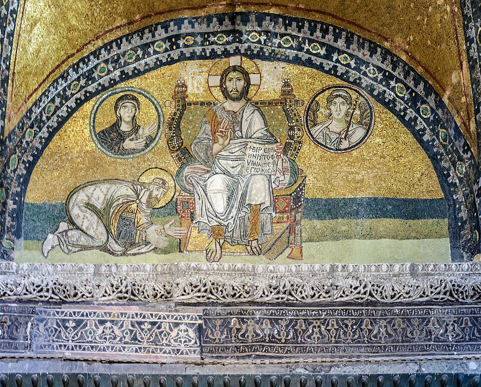
画像を拡大 ＋《アヤ・ソフィア帝国門のモザイク（キリストと皇帝レオン6世）》
- 作者
- 作者不詳
- 制作時期
- 9世紀末～10世紀初頭
- 所在地・所蔵
- アヤ・ソフィア、帝国門上部、イスタンブール
- 素材・形式
- モザイク
出典・画像について
モザイクには、ギリシャ語で「コンスタンティノス・モノマコス、神たるキリストを信じるアウトクラトール、ローマ人たちのバシレウス」という銘文が残されています。アウトクラトールは絶対的な権力を持つ者、バシレウスは君主という意味とされます。キリストを背景に、自らの権力を示していたことが分かります。

《キリストと皇帝コンスタンティノス9世モノマコス、皇妃ゾエのモザイク》
- 作者
- 作者不詳
- 制作時期
- 11世紀
- 所在地・所蔵
- アヤ・ソフィア、イスタンブール
- 素材・形式
- モザイク
出典・画像について
画像出典：Photographer: Myrabella
CC0 1.0（Myrabella撮影）
作品情報：作品・画像・利用条件
制作メモ
配信写真は遠近補正等の調整済みです。
本教材で追加加工はしていません。
図像の制約とビザンツ様式
動画 10:53～聖像擁護派が勝利しても、無条件に図像を作れるようになったわけではありません。イコノクラスムの後、イエス・キリストや聖母をどのように描くべきかが、常に意識されるようになりました。その特色をよく表すものに、「図像は平面でなくてはならない」という制約があります。このため、ビザンティン美術では彫刻が残っていないと説明されます。盛んに彫刻が作られた西ヨーロッパとは、明らかに異なる点です。
彫刻という語の範囲について
「彫刻が残っていない」という説明は、あらゆる彫刻に当てはまるものではありません。本教材前半で扱った象牙の浮き彫りも彫刻に含まれます。大型の立体聖像と、浮き彫りなどの小工芸は区別する必要があります。
その分、モザイク画やイコン制作には、強い熱意が向けられました。建築では、新たな集中式プランであるギリシャ十字式プランが、頻繁に用いられるようになります。ギリシャ十字とは縦と横の長さが同じ十字で、その形を反映した建築構造です。
代表的な建築には、ヴェネツィアのサン・マルコ寺院があります。円形ドームも、ビザンティン美術の特徴といえます。ギリシャ十字式プラン、円形ドーム、内部を彩るモザイク画という特徴を持つ建築を、ビザンツ様式と呼ぶこともあります。

《サン・マルコ寺院》
- 作者
- 建築家不詳
- 制作時期
- 1063年着工、1094年奉献。後世増改築あり
- 所在地・所蔵
- ヴェネツィア、サン・マルコ広場
- 素材・形式
- 建築
出典・画像について
現存建築には後代の装飾・改修を含みます。
画像出典：© José Luiz Bernardes Ribeiro
CC BY-SA 4.0（© José Luiz Bernardes Ribeiro）
作品情報：作品・画像・利用条件

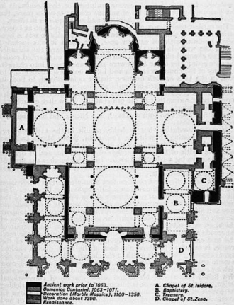
画像を拡大 ＋《サン・マルコ寺院平面図（1911年ブリタニカ掲載補助図）》
- 作者
- R. P. Spiersの図に基づくブリタニカ掲載図
- 制作時期
- 掲載1911年（建築11世紀以降）
- 所在地・所蔵
- 対象建築：サン・マルコ寺院、ヴェネツィア
- 素材・形式
- 建築平面図
出典・画像について
同じ建築の平面を示す公開図版です。動画の図版そのものではありません。
画像出典：Encyclopædia Britannica, 1911
Public domain（PD-Britannica）
作品情報：作品・画像・利用条件
マケドニア朝ルネサンス
動画 12:12～写本には、ギリシャの古典主義的な潮流が見られ、絵にもその様子が現れています。文化的にも、法律や書物を参考にしたものが多く、「マケドニア朝ルネサンス」と呼ばれることがあります。ルネサンスは再生や復興を意味し、古代ギリシャ文化を復興させたという意味で、近年用いられるようになった言葉です。ビザンツ帝国自体も、ギリシャ人の帝国でした。

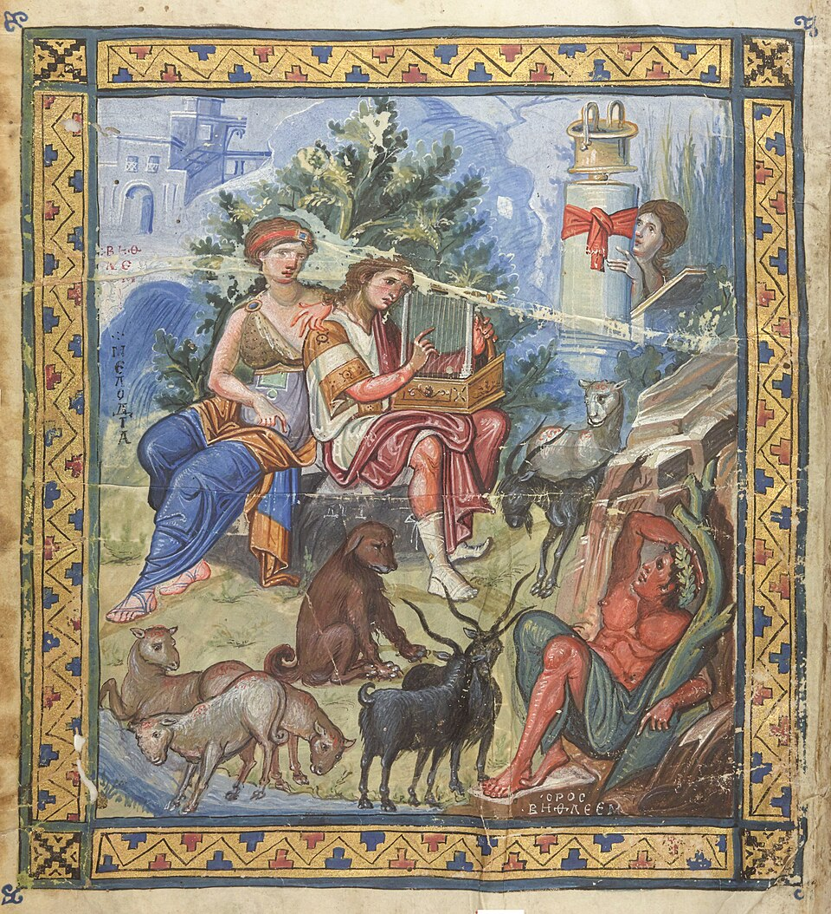
画像を拡大 ＋《パリ詩篇《竪琴を弾くダヴィデ》（Grec 139、fol.1v）》
- 作者
- 作者不詳
- 制作時期
- 10世紀、950～960年頃
- 所在地・所蔵
- フランス国立図書館、Grec 139、fol.1v、パリ
- 素材・形式
- 写本挿絵
出典・画像について
後期と後世への影響
感情表現と最後の黄金期
動画 12:38～長く続いたマケドニア朝は1056年に滅亡し、コムネノス朝が起こりました。この頃には、悲しみなどの感情表現を持つ作品が残されています。それまで多かった無表情の作品とは、印象が異なります。

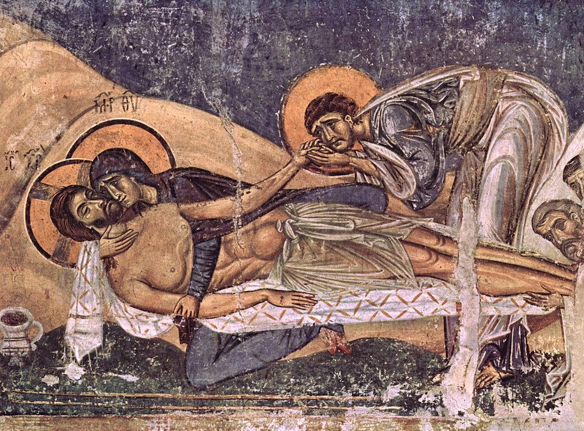
画像を拡大 ＋《キリストの哀悼（ネレジ、聖パンテレイモン聖堂）》
- 作者
- 作者不詳（ネレジの画家）
- 制作時期
- 1164年
- 所在地・所蔵
- 北マケドニア、ゴルノ・ネレジ、聖パンテレイモン聖堂
- 素材・形式
- フレスコ画
出典・画像について
しかし、13世紀前半、西方のキリスト教徒による略奪で、美術は再び停滞しました。1261年にパレオロゴス朝が首都を奪還すると、最後の黄金期である「第三次黄金期」が始まります。ただし、その頃の領土は、最大版図の時代と比べて非常に小さくなっていました。
13世紀頃の壁画では、モザイク画からフレスコ画への置き換えが見られます。金や色ガラスを用いるモザイクは費用がかかるため、フレスコ画へ移行したのです。中期に見られた感情表現は継承され、技法はさらに洗練されました。また、コーラ修道院に残るモザイクは、写実的で典雅な装飾を持っています。

《聖母の眠り（オフリド、聖母ペリブレプトス聖堂）》
- 作者
- ミハイル・アストラパス、エウティキオス
- 制作時期
- 1294～1295年頃
- 所在地・所蔵
- 北マケドニア、オフリド、聖母ペリブレプトス聖堂
- 素材・形式
- フレスコ画
出典・画像について

《聖パウロ（コーラ修道院のモザイク）》
- 作者
- 作者不詳
- 制作時期
- 14世紀
- 所在地・所蔵
- トルコ、イスタンブール、コーラ修道院聖堂
- 素材・形式
- モザイク
出典・画像について
ロシアのイコンとエル・グレコへ
動画 13:39～パレオロゴス朝は、1453年にオスマン帝国によって、ビザンツ帝国とともに滅亡しました。しかし、西へ逃れた学者たちの助力によって、イタリアのフィレンツェではルネサンスが開花します。イコン制作はスラブ人に引き継がれ、ロシア正教が後継者となりました。ロシアのアンドレイ・ルブリョフのイコンは、今も最高傑作といわれるほどです。

《聖三位一体》
- 作者
- アンドレイ・ルブリョフ
- 制作時期
- 15世紀前半（Commons作品情報1425～1427年）
- 所在地・所蔵
- 2024年返還記録：ロシア、至聖三者聖セルギイ大修道院トロイツキー聖堂／旧所蔵：トレチャコフ美術館、13012
- 素材・形式
- 板絵・イコン
出典・画像について
1000年近く続いたビザンティン美術は、イコノクラスムや各国からの圧力で停滞しながらも、独自の美術を展開し、その影響を後世へ残しました。現在のギリシャに属するクレタ島では、オスマン帝国の支配後もビザンティン時代の表現が固守され、クレタ派と呼ばれました。16世紀、その画家の一人ドメニコス、通称エル・グレコがスペインへ渡り、西洋美術史に名を残します。今日、マニエリスム期最大の画家とも評される彼のルーツには、ビザンティンの様式があったのです。
画像を拡大 ＋
《無原罪の御宿り（オバーリェ礼拝堂祭壇画）》
- 作者
- エル・グレコ
- 制作時期
- 1608～1613年
- 所在地・所蔵
- スペイン、トレド、サンタ・クルス美術館、DO1277
- 素材・形式
- 油彩画
出典・画像について
要点まとめ
- 395年にローマ帝国は東西に分割され、西ローマ帝国は476年に滅亡した。ビザンティン美術は、1000年近く続いた東ローマ帝国の美術。名は首都コンスタンティノープルの旧称ビザンティウムに由来する。
- 527年に即位したユスティニアヌス帝の時代は「第一次黄金期」。アヤ・ソフィア大聖堂は直径33メートルのドームを持ち、バシリカ式と集中式を融合した円蓋式バシリカである。
- 教会は色ガラスや金のモザイク画で彩られた。サン・ヴィターレ聖堂の《ユスティニアヌス帝と従者たち》は、実在の皇帝を光輪付きで「神の代理人」として描いた。
- 持ち運べる板に聖人などを描いたイコンが崇拝され、顔料と卵などを混ぜたテンペラで描かれた。
- 7世紀にはイスラム勢力やスラブ人が脅威となり、公用語はラテン語からギリシャ語に変わった。
- 726年、レオン3世の聖像禁止令から約100年にわたり聖像破壊運動（イコノクラスム）が行われた。843年に聖像擁護派が勝利して終結し、東はギリシャ正教会、西はローマ・カトリック教会として対立が明確になった。
- 867年からのマケドニア朝の時代は「第二次黄金期」。アヤ・ソフィアのアプスに《聖母子》のモザイクが制作された。図像は平面でなくてはならないとされ、彫刻は残っていない。ギリシャ十字式プラン、円形ドーム、モザイク画を持つ建築はビザンツ様式と呼ばれ、サン・マルコ寺院が代表。
- 古典主義的な潮流は「マケドニア朝ルネサンス」と呼ばれる。コムネノス朝では感情表現が現れ、1261年からのパレオロゴス朝は「第三次黄金期」で、費用のかかるモザイクからフレスコ画への移行が見られる。
- 1453年にオスマン帝国によって滅亡したが、西へ逃れた学者がフィレンツェのルネサンスを助けた。イコン制作はロシア正教に引き継がれ（ルブリョフ）、クレタ派からはエル・グレコが出た。
確認問題
答えを考えてから開いてください。選択問題は選ぶとすぐ正誤と解説が出ます（選択肢の順番は開くたびに変わります）。各問題のリンクから該当の章や作品カードへ戻れます。
選択問題：0／5問回答・正解0
A. 一問一答答えを考えてから開く
問1726年の聖像禁止令を後ろ盾に、皇帝レオン3世によって始められ、およそ100年にわたって行われた運動を何と呼ぶか。
答えを見る
問2聖人や天使を小さな木や象牙の板に描き、持ち運べるようにしたものを何と呼ぶか。
答えを見る
問3「混ぜ合わせる」を意味するイタリア語に由来し、顔料と卵などを混ぜた絵の具で描く技法は何か。
答えを見る
B. 4択選ぶとすぐ正誤と解説
問4西のバシリカ式と東の集中式を融合した、アヤ・ソフィア大聖堂の建築形式はどれか。
→ 本文で確認（第一次黄金期とアヤ・ソフィア）
問5867年からの「第二次黄金期」と称される時代を開いた王朝はどれか。
→ 本文で確認（聖像の復活と第二次黄金期）
問6ビザンティン美術で彫刻が残っていない理由として説明されているのはどれか。
→ 本文で確認（図像の制約とビザンツ様式）
C. 図版問題画像を見て答える
問7このモザイクの名前を答えよ。皇帝の頭部にある光輪は、皇帝のどのような立場を示しているか。
答えを見る
547年頃、ラヴェンナのサン・ヴィターレ聖堂。聖書の出来事ではなく実在の皇帝を描き、光輪で神のような存在として表した。皇帝は神そのものではなく「神の代理人」という立場を取った。
→ 作品カードで確認
問8このイコンの作者は誰か。
→ 作品カードで確認
問9この建築の名前はどれか。
→ 作品カードで確認